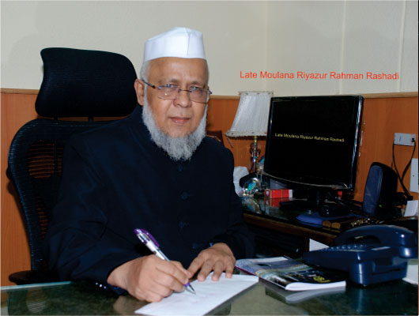

Home / About Us
About Jame-ul-Uloom
The vision, the idea behind the institution and the founding story, and the Founder Secretary’s essays.
Our Vision
- To cherish the quality of simplicity of a person’s behaviour, relationship and lifestyle.
- To be always friendly, polite and courteous with everyone everywhere, and cleanliness of the school premises.
- To initiate and promote experimentation and innovativeness in education.
- To inculcate the habit of punctuality, regularity and discipline.
- To pursue excellence and to mould the character.
- To develop the spirit of national integration and create a sense of Indianness among children.
A Revolutionary Movement
Jamia-ul-uloom was established about twenty years ago with only two students. Since then its growth development and progress has been rapid, astonishing and most exemplary. Today it has grown into a massive institution imparting knowledge to about 3,500 students.
The Jamia-ul-uloom complex has classes from nursery to computer training, and students start coming from 7am and the institute closes at about 10.30pm.
In the Hifze Quran department boys and girls both are becoming Hafiz and Hafiza. In this contest the Jamia-ul-uloom at Jamia Masjid (city) is not just a school it is a revolutionary movement. It is the most glaring example for the Muslims of Karnataka in particular and Muslims of India in general.
The roots of this institute are in Masjid-E-Nabvi, from where knowledge spread to the every part of the world. It is from Masjid-e-Nabvi, the Holy Prophet Hazrath Mohammed (S.A.W) spread the message of universal brotherhood, revealed the Holy Quran and reformed the whole society.
The Holy prophet and his companions underwent every types of hardship, built the Masjid-e-Nabvi, because Namaz is obligatory for all Muslims, a true Muslim just cannot neglect Namaz. And the “Suffa” was constructed to spread knowledge. As a Muslim’s life is waste without Namaz, without knowledge, a Muslim’s life is worst than death. The Holy Prophet (S.A.W) has said, “the life of an ignorant and illiterate person is not life but death.”
The companions of the Holy Prophet would learn about the Holy Quran and various other aspects of life from the Prophet at the Masjid-e-Nabvi.
From these facts we can easily conclude that Masjid-e-Nabvi was not constructed only for Namaz, the other purpose was to spread knowledge from this platform (Suffa), Masjid-e-Nabvi attended to all the problems faced by Muslims. At the time of Namaz all would form rows and say their Namaz and after namaz teaching sessions were conducted at the Masjid-e-Nabvi, and the suffa was the permanent seat of few students, they used to learn about various subjects from the Holy Prophet, they would also undergo training in horse riding and other skills of war. But alas, today the Muslims are ignorant about the role of the Mosque, they think Mosque is meant just for 5 times namaz. This thinking totally wrong and against the philosophy of construction of Masjid-e-Nabvi.
Jamia-ul-uloom situated at Jamia Masjid (city) is a movement, to remind the Muslims about the role of mosque in the society. This movement intends to make the muslims realize that today if muslims are backward in the field of education, it is only because they are staying away from the Mosque. The mosques are abodes of Allah, where Allah is to be remembered, Allah’s message and the message of his Prophet is to be taught, the principles of life and world taught by the Prophet (S.A.W) should be taught, the people should be taught the ways of life taught by Holy Prophet (S.A.W) in the Masjid-e-Nabvi, and all these teachings should be imparted in contemporary methods of teaching. So as to save our younger generations from the evils of the world. Today schools and various institutions are being established to impart western culture and English language, in these places all types of corrupt vulgar thoughts and views are being spread among our children. Is it not our duty to save our children from this moral disaster by establishing schools and institutes to impart the best of education in a total Islamic atmosphere. Let us assemble at the Mosques, let us make these mosque centers of learning, let us spread the Quranic teachings and these Hadees from the Mosques, let us impart education from nursery to Hitech at their centers.
Let us educate our children in a total Islamic atmosphere, let us make them good persons, good doctors and good engineers. All these aims can be realized only if muslims adopt this movement, make every Mosque a true copy of Masjid-e-Nabvi. Today we can proudly say Jamia-Masjid has set an example in this direction and if all Muslims follow this example muslims can progress in the field of education.
Jamia-ul-Uloom — Fond Memories
Two essays by Alhaj Mohammed Ateeq Ahmed, Founder Secretary, Jame-ul-uloom, Jamia Masjid .
Among all the sites in the world, the best and the most honoured site is that on which a mosque is built, as the mosque are the most loved homes of Allah. In these mosques we receive peace of mind, soul and conscience. Construction of mosque is a very grand act, as the construction of the mosques has been termed as the best of the deeds of a momin, and Allah gifts a palace, which would be the eternal abode of the momin who constructs a mosque.
A mosque is unique sign of Deen-e-Islam. The Masjid-e-Nabvi (at Madeena) is the most distinguished mosque, as in this mosque the prayers were not just restricted to Namaz, recitation of the Holy Quran and remembrance of Allah, but it was the center of Islamic brotherhood, learning and teaching and all the Islamic activities. As far as learning and teaching in the masjid-e-nabvi is concerned, the institution of Suffa and As’hab-e-Suffa are the most illuminous examples. On this suffa (seat) stood the house of knowledge of the Holy Prophet. Poor and homeless companions of Holy Prophet assembled here, these companions had dedicated their to acquire knowledge. It would be better if the mosques are constructed on the basis of aforesaid objectives, by this way we would also be acting according to sunnath.
To accomplish these objectives the foundation of Jamia Masjid City Bangalore was laid in the heart of the city in 1936. The founders of this mosque wished that this mosque should not just serve the purpose of Namaz and Zikr O Azkar, but muslims and their children should receive education here, because in the city muslim children were going to schools devoid of Islamic atmosphere and they also did not have any system to build the moral and character of muslim child, and a movement to kill the very identity of muslims was spearheaded, by anti Islamic forces. Due to this movement muslim children were becoming unaware of Islam and Islamic teachings. In this context after a discussion and thinking, it was decided to establish a Madrasa and a school under the governor of this mosque to educate and train the muslim child, according to Islamic teachings and to help them to solve the education and economic problems.
To fulfill these objectives, Jamia Masjid and Muslim Charitable Fund Trust was established. The trustees of this trust, keeping in view the objectives of the founder of Jamia Masjid, established a madrasa and a school to impart education to girls and boys separately. So that girls could also come to the school in Hijab and receive education.
Generally the mosque committees are formed only to solve the common problems of the mosque. But “Muslim Charitable Fund Trust” was established along with the trust of the Jamia Masjid City, because we did not want our mosque to be just a mosque, our aim was to make this mosque a center of all muslim activities, mosque should also solve the problems of common muslim and become a learning center for muslims. We wanted to impart education to those muslim children who could not go to school due to financial constraints, we wanted to educate such children with the financial assistance from the muslim charitable fund and educate them in our school and madrasa.
The beginning of Jamia-ul-uloom: This madrasa was started in 1982 with only two students. The trust worked hard, and I can never forget the services of Hazrath Moulana Riyazur Rahman Saheb, Khateeb-O-Imam Jamia Masjid, Bangalore city, who motivated people with his sermons, and more and more people come towards Jamia Masjid. The sermons of Moulana were so powerful and so inspiring and that, people who did not want to educate their children admitted their children to Jamia-ul-uloom. In the success of Jamia-ul-uloom, Moulana Riyazur Rehman played the most important role. We pray Allah show his blessings on Moulana.
In 1986, there were two halls in the west side of the mosque. We started Nursery classes in these halls with prayers, this nursery is now a college. Gradually we established a tailoring institute, a calligraphy center and a Computer institute in the mosque.
Jamia-Ul-Uloom, Shikshanagar (Bannikuppe): as we felt many hurdles in imparting standard to students in the busy life of the city, the trust plan for establishing a residential school away from the city, that children are educated in a peaceful atmosphere. Allah helped the trust to purchase 52 hectares of land at a cost of only Rs. 13.5 lakhs which is 27 Km from the city.
Alhaj Mohammed Ateeq AhmedFounder Secretary, Jame-ul-uloom, Jamia Masjid

See also: Governing Body · Trustees · Chairmen’s Messages · Institutions · Jamia Masjid